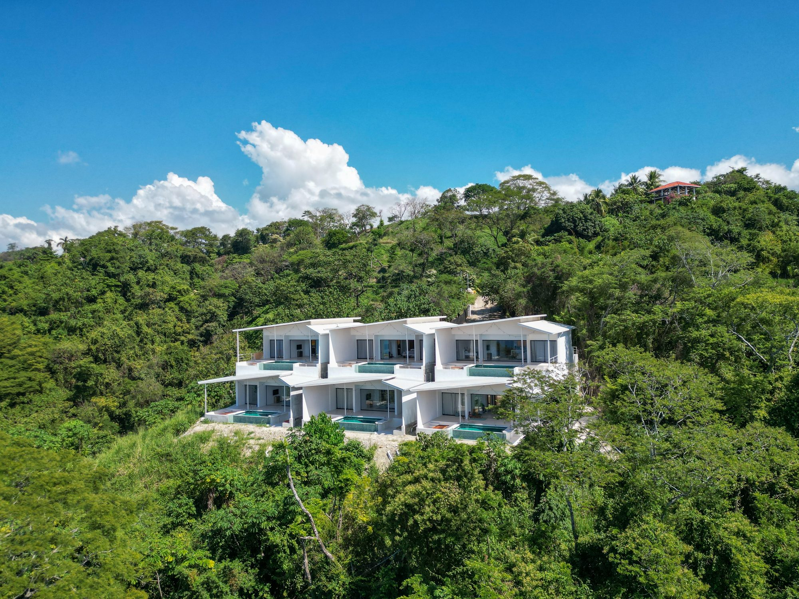
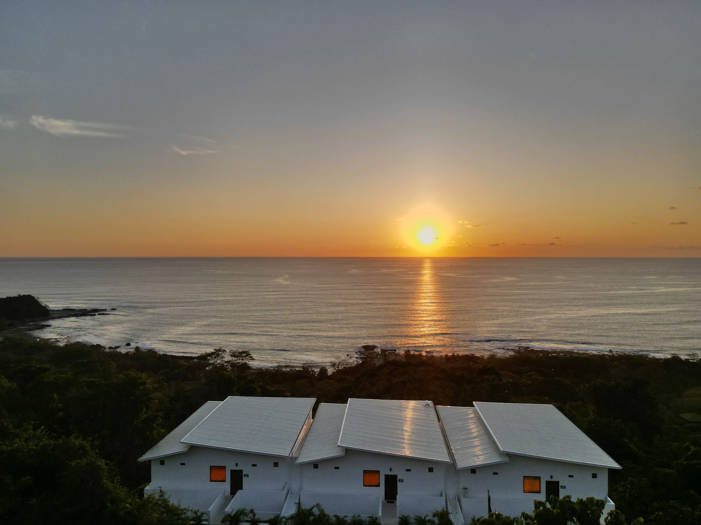

Existe un ritmo en Santa Teresa que exige mucho más que unos pocos días para ser verdaderamente comprendido. No el ritmo frenético de las ciudades, sino algo infinitamente más particular—una secuencia calibrada de agua salada, luz y sustancia que te transforma, te marca, y te devuelve ansioso por volver. Esta es una semana pensada no como una lista de cosas por hacer o un itinerario de Instagram, sino como una inmersión genuina en uno de los pueblos costeros más singulares de América Central, donde la frontera entre aventura y descanso se disuelve en algún punto entre yoga al amanecer y un cóctel Rocamar al atardecer.
Día 1: Llegada y el Primer Atardecer
El viaje en sí es un ritual. La mayoría llega vía el aeropuerto internacional Juan Santamaría de San José, luego toma un vuelo doméstico a Tambor (treinta minutos de anticipación), seguido de un viaje en taxi a través de la península—treinta minutos más de anticipación de un tipo diferente. La alternativa es el camino largo: cinco horas desde San José atravesando bosques nubosos y carreteras costeras, llegando salado por el aire marino y profundamente transformado por el viaje. Ambas rutas te desculturizan completamente.
Registrate en Les Roches a última hora de la tarde. El primer orden del día no es deshacer maletas, sino una lenta caminata hasta Playa Santa Teresa mientras el día cede ante el crepúsculo. Observa cómo la luz se fractura sobre el agua, ve cómo locales y viajeros se reúnen instintivamente en la línea costera para esta ceremonia diaria. Siente la textura de la arena entre tus dedos, el sonido de las olas, esa calidad particular del aire en hora dorada en los trópicos.
Para cena, asegura una reservación en Koji's—una cocina de fusión japonesa que opera con un pensamiento más común en Tokio que en pequeños pueblos de América Central. El chef entiende que la calidad del ingrediente importa aquí tanto como en cualquier lugar, y obtiene pescado local con la reverencia que merece. Ordena el menú de degustación y piérdete en los detalles. Luego, acomódate en los asientos de columpio de Rocamar con algo revuelto y agrio. Mira cómo drena la última luz del cielo. Has llegado.

Día 2: La Iniciación del Surf
Despierta antes del amanecer. La playa pertenece a los que se despiertan temprano: surfistas, corredores locales, gente que se mueve por el mundo con intención. Camina la longitud completa de Playa Santa Teresa al amanecer—este simple gesto recalibrará tu sentido del espacio y la escala. El agua es lo suficientemente cálida durante todo el año para un baño rápido sin ceremonia.
Reserva una lección de dos horas con Del Soul Surf School o Captain Hook's Surf Shop (ambos confiables, ambos alrededor de 50-60 euros por persona). Los instructores saben cómo conocer a principiantes y surfistas experimentados por igual sin condescendencia. Hay algo en aprender a cabalgar una ola que despoja la autoconciencia innecesaria y te devuelve a la presencia pura. El océano no le importa tu trabajo ni tus seguidores en las redes sociales.
Después de la lección, dirígete a Somos Coffee para desayuno que reconoce tanto nutrición como placer: tazones de açaí construidos con granola que no sabe a cartón, tostadas de aguacate en pan apropiado, y café que sabe como café de verdad. Pasa tu mañana haciendo nada productivo—tiempo en la piscina, un libro, descanso horizontal en la sombra. Santa Teresa recompensa este enfoque.
Mientras la tarde se enfría hacia la noche, comprométete a una clase de yoga al atardecer en Horizon. La vista del océano durante la postura del perro boca abajo es un detalle que no debe darse por sentado. Cena: Habaneros, donde la influencia local es evidente y las porciones son generosas sin ser excesivas. El pescado es lo que importa aquí.
Día 3: Cabo Blanco y Lo Intacto
Hoy exploraras más allá del pueblo inmediato. Renta un ATV de cualquiera de los numerosos operadores en la ciudad (50-70 euros por día) y conduce veinticinco minutos al sur hacia la Reserva Natural de Cabo Blanco, una de las áreas protegidas más antiguas de Costa Rica y aún una de las más prístinas. El sendero Sendero Sueco—diez kilómetros ida y vuelta, aproximadamente dos a tres horas—es la atracción central de la reserva, moviéndose a través de selva primaria con una densidad que te hace cuestionar si estás en el mismo siglo que tu teléfono.
La vida silvestre aquí es genuina y espontánea: los monos aulladores emiten sus llamadas prehistóricas desde la bóveda; los tucanes exhiben sus picos improbables; los guacamayos escarlata aparecen brevemente y desaparecen como rumores. El sendero emerge eventualmente en Playa Cabo Blanco, una playa de arena blanca aislada sin desarrollo, sin infraestructura, sin historia excepto la contada por el agua y la roca y la selva. Este es el tipo de lugar que regenera el propósito en las personas que lo han perdido.
Regresa a última hora de la tarde. Descansa. Mira el atardecer desde Banana Beach, donde los músicos en vivo a menudo se derivan alrededor del anochecer—no como espectáculo, sino como meditación musical. La música aquí es mejor por ser casual.

Día 4: Cascadas y la Ruta Montezuma
Continúa hacia el sur, esta vez a Montezuma, una hora de distancia a través de la ruta costera pintoresca que serpentea y trepa a través de selva y arroyos. Las Cascadas de Montezuma son icónicas por razones que se vuelven obvias a la llegada—una cascada de tres niveles que se vierte en una serie de piscinas naturales, cada una más fresca y profunda que la anterior. Nadar bajo las cascadas es un acto de reinicio sensorial: la percusión del agua, el frío particular que conmociona y asombra simultáneamente, la simplicidad de estar mojado y flotante en un cañón selvático.
Almuerza en el pueblo de Montezuma mismo, que retiene una atmósfera bohemia en gran medida sin cambios en treinta años. El ambiente es genuinamente desenfadado de una manera cada vez más rara en la península. Come local, come simple, y entiende por qué la gente vino aquí hace décadas buscando algo que el mundo desarrollado no podía proporcionar.
El viaje de regreso debería ser sin prisa. Detente en puntos de vista. Nota cómo cambia el paisaje mientras te mueves. El yoga vespertino se vuelve innegociable en este punto—tu cuerpo lo exigirá. Cena en El Sapo Dorado ofrece cocina tropical creativa que trata ingredientes indígenas con respeto: plátano, pescado fresco, cacao, frutas locales que nunca has oído nombrar, preparadas de maneras que honran en lugar de obscurecer.
Día 5: Escapada a la Isla y la Experiencia Tortuga
Arregla un catamarán a Isla Tortuga el día anterior a través de cualquier hotel u operador turístico. Salida temprano desde el muelle de Tambor o Montezuma (salida a las 8 a.m. estándar). Dos horas de navegación en agua abierta te separan de la isla—suficiente tiempo para consumir café, leer significativamente, y dejar que tu sistema nervioso terrestre se ajuste al horizonte.
Isla Tortuga entrega lo que promete: arena blanca, peces tropicales en tal abundancia y variedad que el snorkel se siente como nadar en un acuario sin paredes, y la paz particular disponible solo en islas pequeñas. El almuerzo se sirve típicamente en la playa—ceviche fresco, arroz, frutas—y se come con el apetito que los viajes generan. Algunas horas serán no programadas. Úsalas para nadar, dormir, leer, o la actividad más valiosa de todas: no pensar en nada en particular.
Regresa alrededor de las 4 p.m. La noche requiere una bebida en Drift Bar, seguida de cena tardía en Katana o un regreso a Koji's si no visitaste antes en la semana. A este punto, los restaurantes te reconocen. Este es el comienzo de pertenencia, sin embargo temporal.

Día 6: A Caballo a Través de la Selva
Equitación matinal al amanecer a través de selva y playa (50-80 euros por persona) es una actividad que cae en algún punto entre aventura y meditación. Los guías locales conocen las rutas íntimamente y entienden cómo mover animales a través del terreno con gracia. El ritmo es sin prisa. Los sonidos son orgánicos—cascos en arena, cantos de pájaros, viento a través de palmeras. Este es viaje como experiencia encarnada en lugar de elemento de lista de verificación.
Regresa antes de mediodía para un desayuno tardío y oisif. Este es día de descanso. Considera un tratamiento de spa si tu cuerpo lo requiere, o simplemente pasa por una sesión de yoga de estiramiento profundo—el tipo que te hace consciente de músculos que no sabías que habías estado usando.
Camina la longitud completa de Playa Carmen a Playa Santa Teresa a última hora de la tarde. A este punto en la semana, entiendes la topología del lugar. Esta caminata proporciona la mejor visión general de cómo se sostiene la península. Observa la luz moviéndose sobre el agua. Entiende por qué la gente se queda.
La noche requiere Rocamar nuevamente—a este punto, tienes un columpio favorito, un cóctel favorito, un momento favorito en la luz. Si el timing se alinea, La Lora Amarilla ofrece noches de reggae o fiestas de luna llena que operan fuera de los parámetros normales de la vida nocturna. La mayoría del tiempo no, y eso está bien también.
Día 7: Rituales de Partida
En tu última mañana, observa tu primer amanecer según tus propias condiciones. La yoga matinal en la terraza de la villa es sagrada y solitaria. Una última sesión de surf, aunque sea simplemente remar sin expectativa de atrapar olas. El agua te conoce ahora.
Camina por el mercado de la ciudad. Compra frutas que nunca verás en casa. Bebe un último café de alguien que sabe tu orden. Un largo almuerzo de despedida en Nectar o Zula—ambos entienden que la comida final debe reconocer todo lo que la ha precedido.
Pasa tu tarde en la piscina. Deja que tu cuerpo descanse. Desempaca lentamente. Escribe tres cosas que quieres recordar, no necesariamente sobre lo que hiciste, sino sobre quién te convertiste mientras estabas aquí.
Llegada: Vuela a San José (SJO), luego toma un vuelo doméstico a Tambor (30 min) o renta un auto para el viaje de 5 horas. Mejor Temporada: Noviembre a abril ofrece sol garantizado y olas confiables; mayo a octubre traen selva exuberante y menos multitudes, aunque las tardes son mojadas. Transporte: Renta un ATV o auto a la llegada—el transporte público es limitado y los taxis son caros. Detalles Prácticos: Reserva restaurantes un día antes. Lleva protector solar seguro para arrecifes. Empaca un traje mojado ligero para baños nocturnos. La península tiene excelentes instalaciones médicas pero servicios de emergencia limitados—se aconseja seguro de viaje. WiFi existe pero no está garantizado en todas partes, que es parte del atractivo.
Comprendiendo el Lugar: Por Qué Santa Teresa Importa
Santa Teresa ocupa una posición inusual en el panorama turístico de Costa Rica. Está lo suficientemente desarrollada para ofrecer comodidad genuina y excelente comida, pero lo suficientemente poco desarrollada para retener autenticidad. Atrae artistas, surfistas, empresarios y buscadores sin parecerse aún a una versión de parque temático del bohemio. La selva aquí sigue siendo salvaje. Las playas no han sido engineered. La comunidad local todavía influye en el carácter del lugar en lugar de existir en servicio a él.
Este equilibrio es frágil e incrementalmente raro. Siete días es el tiempo correcto para entender qué vale la pena preservar en Santa Teresa—la naturaleza salvaje, el agua, la hospitalidad genuina de personas que eligieron estar aquí. También es suficiente tiempo para sentir el tirón hacia el retorno, que es el mayor cumplido que un destino puede recibir.
Ven con intención pero sin expectativas. Lleva apertura en lugar de itinerario rígido. El ritmo de Santa Teresa te enseñará lo que necesitas si eres lo suficientemente paciente para escuchar. Este es un lugar que recompensa la rendición.

Vive Tu Semana Perfecta
Les Roches está diseñada como base para exactamente este tipo de inmersión—un santuario privado desde el cual explorar, y un retiro donde regresar al final del día. Curaremos tus experiencias, arreglaremos reservaciones, y nos aseguraremos de que cada detalle apoye tu viaje.
Planifica Tu Viaje →